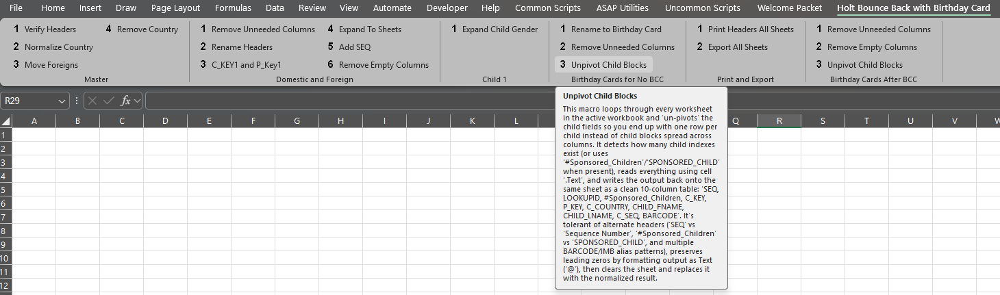
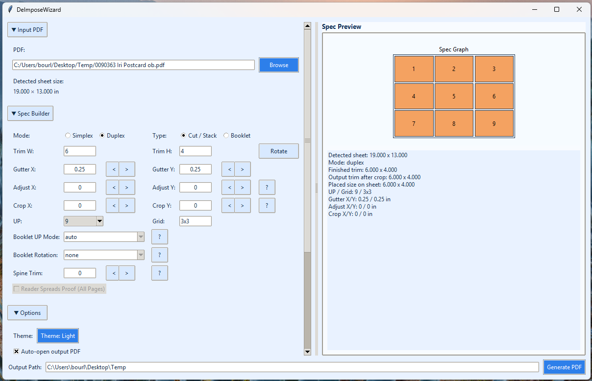

Hybrid specialist combining list processing and prepress into streamlined workflows. Focused on reducing manual effort, improving accuracy, and building scalable production systems.
Replaced a 12-page manual Excel workflow with a fully automated system of macros integrated into a custom ribbon interface. Tasks that previously required one to two hours for recurring weekly and bi-weekly jobs were reduced to minutes. This improved speed, accuracy, and repeatability while eliminating dependence on manual execution. The initiative was self-driven, stemming from a curiosity to challenge existing processes and uncover more efficient solutions.

Resolved a critical proofing gap after a $12,000 production loss caused by a mismatch between client proofs and imposed press files. The existing workflow generated a 1-up proof via XMPIE, while the actual imposed file used for press was never reviewed in a comparable format. As a result, backing errors were not visible during proofing and reached the client. Developed a custom de-imposition application that converts imposed press files back into a 1-up format, allowing the exact production file to be reviewed prior to print. This closed the validation gap, aligned proofing with real output, and eliminated a class of high-cost errors from the workflow.
